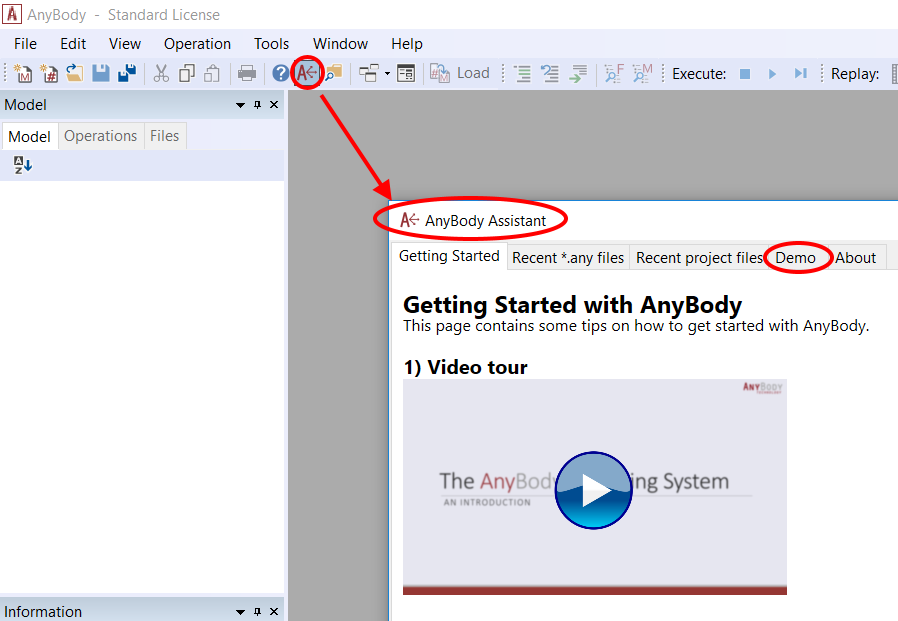

Getting Started Tutorial#
Note
The AnyBody software comes with an inbuilt model repository - The AnyBody Managed Model Repository (AMMR). This tutorial starts with unpacking a local version of the AMMR. You can skip to lesson 1 if you have already done this.
Goals for this tutorial#
This tutorial takes the top-down approach and aims to accomplish the following:
Create a new standing model using the Human Standing template model
Learn how to load & change the posture of the human model, and use the model view window
Run an inverse dynamics analysis and review the results.
This entire tutorial relies heavily on using the AnyBody Managed Model Respository (AMMR). Follow the steps below to unpack a local version of the AMMR.
Setup the AMMR#
Before you continue you must unpack the entire repository and save it on your hard disk. To get a copy of the AMMR press the Demo tab in the AnyBody assistant dialog box.

Following the instructions in the Demo tab will install a copy of the AMMR in your documents folder by default. It is good practice to create a second local copy of the AMMR so that you do not overwrite the original AMMR folder by accident.
AMMR structure#
Open a file manager and navigate to the directory where you unpacked the repository. You should see a folder structure that includes the following subfolders:
Application includes demo simulations of activities such as cycling, lifting a box or propelling a wheelchair.
Body contains models of body parts and collections of body parts such as the lumbar spine model, leg models etc. which are used by the applications.
A closer inspection of the Application branch reveals that it has three subfolders:
The Beta folder contains models that are unfinished, but may still be useful.
The Examples folder contains many models of various activities of daily living, and it is likely that you will find a model that is similar to your own end goal.
The MocapExamples folder contains models utilizing the AnyMoCap framework. If you have your own motion capture data this is a good place to start, whether you want to analyze multi trial/subject MoCap data or a single subject wearing an inertial MoCap suit.
The Validation folder contains models that have been used for validation purposes, typically by comparison of the model predictions with experimental measurements.
Continue
With that knowledge, you are all set to go, and you can proceed with Lesson 1: Creating the standing model using template.